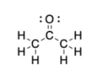
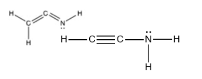
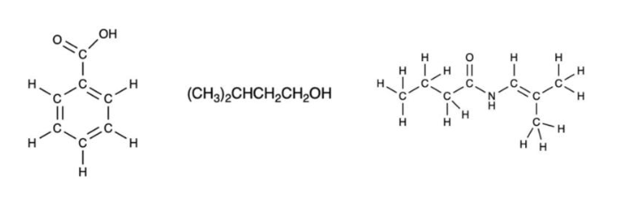
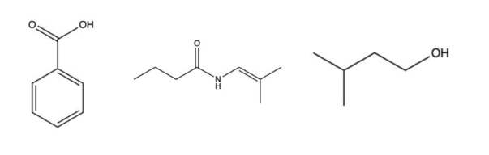

答疑课 1
杜布尔代（Doubleday）教授的有机化学 1
详细解释 1
这部分是课程的标题页。
- 答疑课 1 (Recitation 1)：这表明这是系列课程中的第一次答疑课。答疑课（Recitation）或辅导课（Tutorial）是大学课程（尤其是在北美）的常见组成部分，通常由助教（TA）或高年级学生带领。其主要目的是复习主讲座（Lecture）的内容，通过解决练习题来加深理解，并为学生提供一个可以自由提问的小班环境。
- 杜布尔代（Doubleday）教授的有机化学 1 (Professor Doubleday's Organic Chemistry 1)：这明确了该答疑课所属的课程。有机化学 1 是化学专业或许多生命科学相关专业（如生物、医学预科）的基础核心课程，主要研究含碳化合物的结构、性质、组成、反应以及制备方法。
大家好，我是 Chris
cl4710@columbia.edu。请避开周末。
如果您有任何建议，请告诉我。我们在这里帮助您。

详细解释 2
这部分是答疑课助教的自我介绍和联系方式。
- 大家好，我是 Chris: 助教的自我介绍。
- cl4710@columbia.edu。请避开周末。: 这是助教的电子邮箱地址，用于学术交流和提问。他特别提醒学生，希望在工作日（周一至周五）联系他，周末是他个人的休息时间。
- 如果您有任何建议，请告诉我。我们在这里帮助您。: 这是一种友好的表示，鼓励学生提出反馈和建议，以改善答疑课的质量。同时也强调了助教团队的职责是为学生提供帮助。
- 图片: 图片中展示的是**阿司匹林（Aspirin）**的分子结构，其化学名称为乙酰水杨酸（Acetylsalicylic Acid）。这是一个非常经典和常见的有机分子，经常在有机化学课程的早期作为例子出现。它包含了多种有机化学中的基本官能团，如苯环（aromatic ring）、羧酸（carboxylic acid）和酯（ester）。
什么是答疑课？
- 解答关于讲座的问题
- 帮助您将讲座信息转化为解决问题的能力
- 练习题、技巧和助记符
- 六次小测验

详细解释 3
这部分详细说明了答疑课的目标和内容。
- 解答关于讲座的问题: 讲座通常由教授主讲，内容多、节奏快。答疑课提供了一个机会，让学生可以就讲座中没听懂或有疑问的概念进行提问，助教将进行更详细的解释。
- 帮助您将讲座信息转化为解决问题的能力: 这是答疑课的核心目标。有机化学不仅需要记忆，更需要应用。答疑课通过大量的例题和练习，训练学生如何运用学到的理论知识（如反应机理、命名规则、光谱分析等）去解决具体的化学问题。
- 练习题、技巧和助记符:
- 练习题 (Practice problems)：通过做题来巩固知识和检验学习效果。
- 技巧 (Tips)：助教可能会分享一些解题的快捷方法或者思考问题的窍门。
- 助记符 (Mnemonics)：有机化学中有很多需要记忆的内容（如官能团的优先级、反应命名等），助记符是一种有效的记忆工具，可以帮助学生更快、更牢固地记住这些信息。
- 六次小测验 (Six quizzes)：这表明答疑课的成绩可能会计入课程总成绩。通过定期的小测验，可以督促学生跟上课程进度，并及时发现自己的薄弱环节。
1 八隅体规则
- 我们所处理的大多数原子都希望在价电子层中拥有 8 个电子。
- 每个键算作两个电子，每对孤对电子算作 2 个。
请分成三人小组

详细解释 4
这部分介绍了有机化学中最基本的规则之一：八隅体规则（Octet Rule）。
- 定义: 八隅体规则指出，主族元素（特别是第二周期元素，如碳C、氮N、氧O、氟F）在形成化合物时，倾向于通过得、失或共用电子，使其最外层（价电子层）的电子数达到 8 个。这是一种非常稳定的电子构型，与惰性气体（如氖Ne、氩Ar）的电子排布相同。
- 为什么是 8 个电子?: 一个原子的价电子层通常由一个 s 轨道和三个 p 轨道组成。每个轨道最多可容纳 2 个电子，因此 轨道 + 轨道 = 4个轨道，总共可以容纳 个电子。达到 8 电子构型意味着价电子层被填满，原子处于能量较低的稳定状态。
- 如何计算:
- 共价键 (Covalent bond)：一个共价键由两个原子共享一对电子形成。在计算一个原子的价电子数时，这个共享电子对（2个电子）需要同时算入两个成键原子的价电子层。例如，在 键中，2个电子既属于碳，也属于氢。
- 孤对电子 (Lone pair electrons)：这是指原子价电子层中未参与成键的电子对。一对孤对电子（2个电子）完全属于该原子。
- 总价电子数 = (成键数 2) + (孤对电子数)。
- 例子: 在右图的水分子 () 中：
- 氧原子形成了 2 个 O-H 单键，并且有 2 对孤对电子。
- 氧原子的价电子数 = (2 个键 2 电子/键) + (2 对孤对电子 2 电子/对) = 4 + 4 = 8 个电子。因此，氧原子满足八隅体规则。
- 每个氢原子形成了 1 个 H-O 单键，没有孤对电子。
- 氢原子的价电子数 = 1 个键 2 电子/键 = 2 个电子。氢原子是八隅体规则的一个例外，它只需要达到氦（He）的电子构型，即 2 个价电子，就达到了稳定状态。
- 常见的例外:
- 缺电子 (Electron deficient): 氢(H)满足于2个电子。硼(B)和铝(Al)等通常满足于6个价电子，如 。
- 超价 (Hypervalent): 第三周期及以后的元素（如磷P、硫S、氯Cl），因为它们有空的 d 轨道可以容纳更多电子，所以价电子数可以超过 8 个，例如 中的磷有 10 个价电子， 中的硫有 12 个价电子。
2 练习
问题 2
画出下列分子的路易斯结构
详细解释 5
这部分要求画出三个分子的路易斯结构（Lewis Structures）。路易斯结构是一种用短线表示共价键，用点表示孤对电子的分子结构图。画路易斯结构的步骤如下：
- 计算总价电子数：将分子中所有原子的价电子数相加。
- 确定中心原子：通常是电负性最小且能形成最多共价键的原子。氢和卤素通常作为末端原子。
- 画出骨架结构：用单键将中心原子与末端原子连接起来。
- 分配剩余电子：从总价电子数中减去成键用掉的电子数（每个单键2个电子）。将剩余电子作为孤对电子优先分配给末端原子，使其满足八隅体规则。
- 检查中心原子：如果末端原子都满足八隅体后仍有剩余电子，则将它们分配给中心原子。如果中心原子不满足八隅体规则，则将末端原子的孤对电子移动过来与中心原子形成双键或三键，直到中心原子也满足八隅体规则。
- 计算形式电荷 (Formal Charge)：作为检查，可以计算每个原子的形式电荷，最优的路易斯结构通常是形式电荷总和为零（对中性分子）且各原子形式电荷尽可能接近零的结构。
- 公式: 形式电荷 = (价电子数) - (孤对电子数) - (1/2 成键电子数)
下面我们对问题2中的分子进行具体分析：
-
(乙腈, Acetonitrile)
- 总价电子数: (2 C) + (3 H) + (1 N) = (2 4) + (3 1) + (1 5) = 8 + 3 + 5 = 16 个。
- 骨架结构: 一种常见的连接方式是 C-C-N。将3个H连接到其中一个碳上，形成 。
- 分配电子: 骨架 用了5个单键，共 个电子。剩余 个电子。
- 满足八隅体: 将6个电子分配给末端的氮原子（3对孤对电子）。此时氮满足八隅体，但中间的碳原子只有 个电子，不满足。
- 形成多重键: 从氮原子上移动两对孤对电子与中间的碳形成三键。
- 最终结构: 。此时，甲基碳有4个单键（8电子），中间碳有1个单键和1个三键（8电子），氮有1个三键和1对孤对电子（8电子）。所有原子（除H外）都满足八隅体。
-
(光气, Phosgene)
- 总价电子数: (1 C) + (1 O) + (2 Cl) = 4 + 6 + (2 7) = 4 + 6 + 14 = 24 个。
- 中心原子: 碳的电负性最低，作为中心原子。
- 骨架结构: C连接1个O和2个Cl。用了3个单键，共 个电子。
- 分配剩余电子: 剩余 个电子。将它们作为孤对电子分配给末端原子：每个Cl各3对（共12个），O需要3对（6个）。 个，正好用完。
- 检查中心原子: 此时，O和Cl都满足八隅体，但中心原子C只有3个单键，共6个电子，不满足。
- 形成多重键: 从氧原子上移动一对孤对电子与碳形成双键（通常比从卤素移动更优，因为可以使碳和氧的形式电荷为0）。
- 最终结构: O与C形成双键，两个Cl与C形成单键。此时C有1个双键和2个单键（8电子），O有1个双键和2对孤对电子（8电子），每个Cl有1个单键和3对孤对电子（8电子）。
-
(丙酮, Acetone)
- 总价电子数: (3 C) + (6 H) + (1 O) = (3 4) + (6 1) + 6 = 12 + 6 + 6 = 24 个。
- 骨架结构: 分子式提示了连接方式：两个 基团连接到一个中心碳（羰基碳）上，该碳还与一个氧原子相连。骨架为 C-C(O)-C。
- 分配电子: 骨架 中，有2个C-C单键，6个C-H单键，1个C-O单键，共9个单键，用掉 个电子。
- 分配剩余电子: 剩余 个电子。将它们分配给氧原子（3对孤对电子）。
- 检查八隅体: 此时，两个甲基碳和氧原子都满足八隅体，但中间的羰基碳只有3个单键（6电子），不满足。
- 形成多重键: 从氧原子上移动一对孤对电子与中间碳形成双键。
- 最终结构: 中间碳与氧形成双键，并分别与两个甲基碳形成单键。
问题 3
画出下列分子的路易斯结构



详细解释 6
这部分是更多的路易斯结构练习。图片中已经给出了正确的路易斯结构，我们来验证一下。
-
(甲醇, Methanol)
- 总价电子数: (1 C) + (4 H) + (1 O) = 4 + 4 + 6 = 14 个。
- 骨架与成键: C-O骨架。3个H连在C上，1个H连在O上。共形成 , , 5个单键，用掉 个电子。
- 剩余电子: 个电子。
- 分配: 碳已经有4个键（8电子），满足八隅体。氧有2个键（4电子），需要4个电子。将剩余的4个电子作为2对孤对电子分配给氧。
- 结果: 氧有2个键和2对孤对电子，总共8个价电子，满足八隅体。图中结构正确。
-
(甲醛, Formaldehyde)
- 总价电子数: (1 C) + (2 H) + (1 O) = 4 + 2 + 6 = 12 个。
- 骨架与成键: 碳为中心原子，连接2个H和1个O。形成 , 3个单键，用掉 个电子。
- 剩余电子: 个电子。
- 分配: 将6个电子作为3对孤对电子分配给末端原子氧。
- 检查与调整: 此时氧有1个键和3对孤对电子（8电子），满足八隅体。但中心碳只有3个键（6电子），不满足。因此，从氧上移动一对孤对电子与碳形成双键。
- 结果: 碳与氧形成双键，与两个氢形成单键。此时碳有4个键（8电子），氧有1个双键和2对孤对电子（8电子）。所有原子（除H）都满足八隅体。图中结构正确。
-
(氰化氢, Hydrogen Cyanide)
- 总价电子数: (1 H) + (1 C) + (1 N) = 1 + 4 + 5 = 10 个。
- 骨架与成键: 碳为中心原子，连接H和N。形成 2个单键，用掉 个电子。
- 剩余电子: 个电子。
- 分配: 将6个电子作为3对孤对电子分配给末端原子氮。
- 检查与调整: 此时氮有1个键和3对孤对电子（8电子），满足八隅体。但中心碳只有2个键（4电子），不满足。需要从氮上移动两对孤对电子与碳形成三键。
- 结果: H与C形成单键，C与N形成三键。此时碳有4个键（8电子），氮有1个三键和1对孤对电子（8电子）。所有原子（除H）都满足八隅体。图中结构正确。
3 骨架结构
○1
线条中的每个弯曲代表一个碳原子。
○2
我们不画连接在碳原子上的氢原子。
您可以通过八隅体规则推断出隐式氢原子的数量。


详细解释 7
这部分介绍了有机化学中极为重要的骨架结构（Skeletal Structure），也称为键线式（Bond-line Notation）。这是一种简化有机分子结构图的表示方法，能快速、清晰地传达复杂的分子结构。
骨架结构的核心规则：
- 碳骨架: 分子的碳骨架由一系列的线段表示。
- 线的端点 (Ends of lines) 代表一个甲基（）碳，除非该端点连接了其他非氢原子。
- 线的交点或弯曲处 (Vertices/Bends) 代表一个碳原子。
- 氢原子的省略:
- 连接在碳原子上的氢原子通常不画出来。
- 我们假设每个碳原子都满足八隅体规则（通常是形成4个键）。通过计算一个碳原子已经画出的键数，可以推断出它所连接的氢原子数量。
- 隐式氢原子数 = 4 - (该碳原子画出的键数)。例如，一个碳原子在图中只画了1个键，那么它就隐含连接了 个氢原子（即 基团）。如果画了2个键，就隐含连接了 个氢原子（即 基团）。
- 杂原子 (Heteroatoms):
- 所有非碳、非氢的原子（如O, N, S, Cl等）都必须明确画出其元素符号。
- 连接在杂原子上的氢原子必须明确画出。例如，醇（-OH）中的H和胺（-NH2）中的H都必须画出来。
- 孤对电子: 杂原子上的孤对电子可以画出，也可以省略，但理解它们的存在对于判断反应性至关重要。
图例分析：
- 左图: 展示了从完整的路易斯结构（包含所有C和H）到骨架结构的简化过程。
- 分子为己烷 (Hexane)，化学式 。
- 它的骨架结构是一条有4个弯曲的折线，总共有6个碳原子（2个端点 + 4个弯曲处）。
- 最左边的碳（端点）只画了1个键，所以它有 个H。
- 中间的4个碳（弯曲处）都画了2个键，所以它们各有 个H。
- 中图和右图: 展示了含有双键、三键和环的骨架结构。
- 中图是环己烯 (Cyclohexene)，一个六元环，其中包含一个碳-碳双键。
- 右图是2-丁炔 (But-2-yne)，一个四碳链，中间有一个碳-碳三键。注意，含有三键的 部分是线性的（180°角），所以在画骨架结构时，这四个碳原子应该在一条直线上。
问题 4
将下列结构/分子式转换为骨架图

将下列结构/分子式转换为骨架图

详细解释 8
这部分是练习将不同形式的结构式（如缩合结构式）转换为骨架结构。
第一个分子：
- 识别主链: 最长的碳链是5个碳。我们可以从右向左编号：。
- 画出主链骨架: 画一条代表5个碳的折线。
- 添加取代基:
- 在3号碳上，有一个溴原子（Br）。所以从代表3号碳的顶点画一条线，并标上 Br。
- 在4号碳上，连接着一个 基团。这意味着4号碳上连接着一个异丙基（isopropyl group）。但是，分子式写作 ，这通常表示两个甲基连接在同一个碳上。让我们重新解读分子式： 是一个异丙基的开头，它连接到 上。所以结构是：
- (CH3)2CH-CH(Br)-CH2-CH3。
- 主链是4个碳（从CH(Br)到CH3）。
- 2号碳上有一个Br。
- 3号碳上有一个甲基。
- 让我们再换一种方式解读，这也是常见的缩写方式：。这是一个6碳分子。
- 主链是：...-CH-CH-CH2-CH3。在第一个CH上，连着两个CH3。在第二个CH上，连着一个Br。
- 最长的链是5个碳：(CH3)-CH(CH3)-CH(Br)-CH2-CH3。
- 所以这是一个戊烷（pentane）衍生物。
- 画骨架图：
- 画一个5碳的折线骨架。
- 从右到左编号，在2号碳上画一个向下的线代表甲基。
- 在3号碳上画一条线，末端写上Br。
- 该分子命名为：3-溴-2-甲基戊烷 (3-bromo-2-methylpentane)。
第二个分子：结构图
- 识别碳骨架: 这是一个含有环的分子。它有一个六元环。
- 画出环: 画一个正六边形，代表环己烷（cyclohexane）骨架。
- 添加取代基和官能团:
- 环上有一个碳与氧形成双键（C=O），这是一个酮（ketone）官能团。在六边形的一个顶点上画一条双线连接到O。
- 在酮基旁边的碳原子上，连接着一个乙基（ethyl group, ）。从该顶点画一条代表2个碳的折线。
- 在酮基另一侧的碳原子上，连接着一个异丙基（isopropyl group, ）。从该顶点画一个"Y"形的分叉线。
- 最终结构: 这是一个被取代的环己酮（cyclohexanone）。根据命名规则，它叫 2-乙基-6-异丙基环己酮 (2-ethyl-6-isopropylcyclohexanone)。
4 杂化
○1
在价电子层中，有一个 s 轨道和三个 p 轨道
这些轨道会尝试混合在一起以最小化能量，因此形成 sp3 杂化。
○2
如果存在双键，其中一个 p 轨道将被使用。
剩余 1 个 s 轨道和 2 个 p 轨道，因此形成 杂化。
○3
杂化 -> 几何构型。

详细解释 9
这部分介绍了**轨道杂化（Orbital Hybridization）**理论。这是一个用于解释分子几何形状和成键方式的理论模型，特别是对于有机分子中的碳原子。
核心思想： 原子轨道（如球形的s轨道和哑铃形的p轨道）本身不能很好地解释实验观察到的分子形状（如甲烷的正四面体结构）。杂化理论提出，中心原子的价层原子轨道在成键之前会进行“混合”或“重组”，形成一组新的、能量相等、形状和方向完全相同的杂化轨道（Hybrid Orbitals）。这些杂化轨道能更好地在空间中排布，使电子对之间的排斥力最小化，从而形成更稳定的化学键。
判断杂化的快速方法： 计算中心原子周围的立体数（Steric Number），即**“电子域”**的数量。
-
立体数 = 4 杂化
- 组成: 1个s轨道和3个p轨道混合，形成4个杂化轨道。
- 几何构型: 这4个杂化轨道在空间中指向一个正四面体的四个顶点，以使相互排斥最小。
- 键角: 理想键角为 109.5°。
- 成键: 形成4个单键。
- 例子: 甲烷()中的碳，水()中的氧。
-
立体数 = 3 杂化
- 组成: 1个s轨道和2个p轨道混合，形成3个杂化轨道。留下1个未参与杂化的p轨道。
- 几何构型: 这3个杂化轨道在同一个平面上，指向一个等边三角形的三个顶点。
- 键角: 理想键角为 120°。
- 成键: 3个轨道用于形成3个键。未杂化的p轨道垂直于这个平面，用于与另一个原子的p轨道侧向重叠，形成1个键。一个双键由一个键和一个键组成。
- 例子: 乙烯()中的碳，甲醛()中的碳。
-
立体数 = 2 杂化
- 组成: 1个s轨道和1个p轨道混合，形成2个杂化轨道。留下2个相互垂直且未参与杂化的p轨道。
- 几何构型: 这2个杂化轨道在同一直线上，方向相反。
- 键角: 理想键角为 180°。
- 成键: 2个轨道用于形成2个键。2个未杂化的p轨道用于形成2个键。一个三键由一个键和两个键组成。
- 例子: 乙炔()中的碳，氰化氢()中的碳。
总结图表分析: 右侧的图表清晰地总结了这三种主要杂化类型与分子几何构型及键角之间的对应关系，这是有机化学中最基础、最重要的概念之一。
问题 5.1
在每个框中写出所示原子的杂化类型（2014 年秋季期中考试 1）


详细解释 10
这部分是应用杂化理论来判断具体分子中指定原子的杂化类型。
-
左侧分子:
- 指定原子: 箭头指向的碳原子。
- 分析: 这个碳原子与另外四个原子（一个碳和三个氢）通过四个单键相连。它没有孤对电子。
- 计算立体数: (连接的原子数) + (孤对电子数) = 4 + 0 = 4。
- 结论: 立体数为4，因此该碳原子的杂化类型是 。
-
中间分子:
- 指定原子: 箭头指向的碳原子（羰基碳）。
- 分析: 这个碳原子与三个其他原子相连（一个氧，两个碳）。它通过一个双键（与O）和两个单键（与C）成键。它没有孤对电子。双键只算作一个电子域。
- 计算立体数: (连接的原子数) + (孤对电子数) = 3 + 0 = 3。
- 结论: 立体数为3，因此该碳原子的杂化类型是 。
-
右侧分子:
- 指定原子: 箭头指向的碳原子。
- 分析: 这个碳原子与两个其他原子相连（一个碳和一个氮）。它通过一个三键（与N）和一个单键（与C）成键。它没有孤对电子。三键只算作一个电子域。
- 计算立体数: (连接的原子数) + (孤对电子数) = 2 + 0 = 2。
- 结论: 立体数为2，因此该碳原子的杂化类型是 。
问题 5.2
b) 确定每个所示原子的键角
详细解释 11
这部分要求根据杂化类型来确定理想的键角。键角是由中心原子的杂化轨道在空间中的排布决定的。
-
左侧分子 (sp³ 杂化碳):
- 几何构型: 杂化对应**正四面体（Tetrahedral）**电子几何构型。
- 键角: 在一个理想的正四面体中，从中心到各个顶点的夹角都是 109.5°。因此，H-C-C 或 H-C-H 的键角约为 109.5°。
-
中间分子 (sp² 杂化碳):
- 几何构型: 杂化对应**平面三角形（Trigonal Planar）**电子几何构型。
- 键角: 在一个理想的平面三角形中，键与键之间的夹角是 120°。因此，O=C-C 或 C-C-C 的键角约为 120°。
-
右侧分子 (sp 杂化碳):
- 几何构型: 杂化对应**线性（Linear）**电子几何构型。
- 键角: 在一条直线上，键角为 180°。因此，C-C≡N 的键角是 180°。
注意: 这些都是理想键角。在实际分子中，由于取代基的大小不同或孤对电子的存在（其排斥力大于成键电子），实际键角可能会略有偏差。但对于有机化学入门阶段，使用理想键角即可。
答案 5.1
a) 在每个框中写出所示原子的杂化类型（2014 年秋季期中考试 1）


详细解释 12
这部分显示了问题5.1的正确答案，与我们在详细解释10中的分析完全一致。
- 左侧分子的指定碳原子为 杂化。
- 中间分子的指定碳原子为 杂化。
- 右侧分子的指定碳原子为 杂化。
答案 5.2
b) 确定每个所示原子的键角
从左到右：，，，
详细解释 13
这部分给出了问题5.2的答案。答案列出了四个键角，但问题中只明确指出了三个原子。我们来分析这四个角度的来源。
-
第一个角度 : 这对应于左侧分子中 杂化的碳原子周围的键角。
-
第二个角度 : 这对应于中间分子中 杂化的羰基碳原子周围的键角。
-
第三个角度 : 这对应于右侧分子中 杂化的碳原子周围的键角。
-
第四个角度 : 这个角度从何而来？
- 在中间分子中，与 羰基碳相连的还有一个甲基碳（-CH3）。
- 这个甲基碳形成了4个单键（3个C-H，1个C-C），没有孤对电子。
- 因此，它的立体数是4，杂化类型是 。
- 所以，这个甲基碳周围的 H-C-H 或 H-C-C 键角也约为 。
- 答案中的“从左到右”可能指的是分析这三个分子中的主要碳原子，以及其中一个分子中另一个重要的碳原子。这个解释是最合理的。